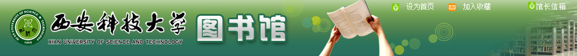

当前位置>本馆概况
西安科技大学图书馆成立于1958年，现有雁塔校区馆和临潼校区馆两部分。雁塔校区馆建于1984年，临潼校区馆建于2002年， 2016年又扩建了2期，总面积4.07万平方米。
图书馆主要组成为采编部、信息咨询部、信息技术部、学科服务部、流通阅览部、期刊阅览部。现有图书馆学情报学专业人才20人，博硕士以上学历33人，高级职称13人，能为广大师生提供高质量的文献信息服务。
截至2016年底，累计馆藏文献资料436.9万册，其中纸质文献资料183.8万册，电子图书253.1万册，中外文纸质期刊1758种，电子版全文期刊4.9万种，中外文数据库54个。馆藏文献以煤炭矿业工程，安全技术与工程为特色，以计算机、通信、电气自动化、机械、材料、地质、环境、建筑等学科为重点，文、管、理、工、法、艺兼收的多学科藏书体系。电子资源不断丰富，目前拥有矿业工程数字图书馆、煤炭数字图书馆、中国知网、读秀知识库、万方数据库等29个中文数据库，陆续引进了SCI、IEL、Elsevier数据库、PQDT国外博硕士论文全文数据库、Ei、Springerlink、国外科技报告全文数据库、国道外文特色专题数据库、ACM、ASCE、ACS、ASME等17个外文数据库，另外自建数据库8个，收藏有6000多种多媒体光盘。同时还收藏有大量的学位论文、技术标准等。
实行大开间、全开架阅览，实现了“藏、查、借、阅、参”一体化服务模式。使用“汇文文献信息服务系统”，实现了图书馆采购、编目、期刊、典藏、流通自动化管理。建立了光盘网络查询系统，通过校园网或远程访问系统为全校师生提供网上24小时的图书期刊、电子文献、参考咨询、征订文献、新书刊报道等信息的查阅、检索和链接服务。日均接待读者1万人次，年图书流通量35万册，电子资源访问量365.2万次。
遵循资源共享的原则，广泛为校内外读者服务。除书刊的借阅外，还为师生提供科技查新、查收查引、课题检索、馆际互借、文献传递、读者培训、专题讲座等多类型、多层次的服务。